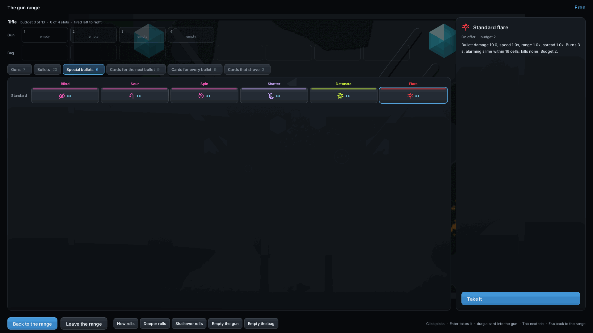

<title>Route Bullets</title>
<meta name="claude:viewport-fit-sides" content="cover">
<link rel="stylesheet" href="https://fonts.googleapis.com/css2?family=Chakra+Petch:wght@600;700&family=IBM+Plex+Sans:wght@400;600&family=IBM+Plex+Mono:wght@400;500&display=swap">
<style>
/* Same system as the Mind and reader pages. Each Flare pair side by side (one column on a phone), counts under each clip in mono. Accents: the flare's red, the germ's acid green. */
:root{
  --bg:#eef0ee; --panel:#e0e4e1; --fg:#161a19; --muted:#56605c; --line:#c5cbc7;
  --flare:#c4283a; --sick:#5c8a00; --crystal:#137f95; --off:#8a5a00;
  --display:"Chakra Petch","Segoe UI",system-ui,sans-serif;
  --body:"IBM Plex Sans","Segoe UI",system-ui,sans-serif;
  --mono:"IBM Plex Mono",ui-monospace,Consolas,monospace;
}
@media (prefers-color-scheme: dark){:root:not([data-theme="light"]){
  --bg:#101413; --panel:#1a201e; --fg:#e8ece9; --muted:#9aa5a0; --line:#2b3330;
  --flare:#ff6a78; --sick:#d4ff4a; --crystal:#5fd0e3; --off:#ffc35c; color-scheme:dark}}
:root[data-theme="dark"]{
  --bg:#101413; --panel:#1a201e; --fg:#e8ece9; --muted:#9aa5a0; --line:#2b3330;
  --flare:#ff6a78; --sick:#d4ff4a; --crystal:#5fd0e3; --off:#ffc35c; color-scheme:dark}
body{background:var(--bg);color:var(--fg);font:16.5px/1.55 var(--body);
  padding-left:max(16px,env(safe-area-inset-left,0px));padding-right:max(16px,env(safe-area-inset-right,0px));padding-block:28px 64px}
main{max-width:1180px;margin:0 auto;display:flex;flex-direction:column;gap:34px}
h1,h2,h3{font-family:var(--display);text-wrap:balance;line-height:1.12;margin:0;letter-spacing:.01em}
h1{font-size:2.5rem;font-weight:700}
h2{font-size:1.5rem;font-weight:700}
h3{font-size:1.1rem;font-weight:700}
p{margin:0;max-width:70ch}
section{display:flex;flex-direction:column;gap:14px}
.eyebrow{font:12px/1 var(--mono);letter-spacing:.1em;text-transform:uppercase;color:var(--muted)}
.lede{color:var(--muted);font-size:1.04rem;max-width:70ch}
ul{margin:0;padding-left:1.2em;display:flex;flex-direction:column;gap:8px;max-width:74ch}
li{min-width:0}
code{font:.86em var(--mono);background:var(--panel);padding:1px 4px;border-radius:3px}
.bar{display:flex;flex-wrap:wrap;gap:10px;align-items:center}
button{font:600 14px var(--body);color:var(--fg);background:var(--panel);border:1px solid var(--line);border-radius:6px;padding:7px 12px;cursor:pointer}
button[aria-pressed="true"]{background:var(--fg);color:var(--bg);border-color:var(--fg)}
button:focus-visible{outline:2px solid var(--crystal);outline-offset:2px}
.hint{font-size:.9rem;color:var(--muted)}
.pair{display:grid;grid-template-columns:repeat(2,1fr);gap:14px}
@media (max-width:760px){.pair{grid-template-columns:1fr}}
figure{margin:0;display:flex;flex-direction:column;gap:6px;min-width:0}
video{width:100%;max-width:100%;aspect-ratio:960/456;border-radius:6px;border:1px solid var(--line);background:#000;display:block}
img.still{width:100%;max-width:100%;border-radius:6px;border:1px solid var(--line);display:block}
.tag{font:500 12px/1 var(--mono);letter-spacing:.08em;text-transform:uppercase;color:var(--muted)}
.flare .tag.on,.flare h2 .k,.flare h3 .k{color:var(--flare)}
.sick h2 .k{color:var(--sick)}
.off h2 .k{color:var(--off)}
figcaption{font-size:.92rem;color:var(--muted)}
.counts{font:12.5px/1.55 var(--mono);color:var(--fg);background:var(--panel);padding:7px 10px;border-radius:6px;overflow-x:auto;white-space:pre}
.short{background:var(--panel);border-radius:8px;padding:18px 20px;display:flex;flex-direction:column;gap:10px}
.wrap{overflow-x:auto;max-width:100%}
table{border-collapse:collapse;font:13px/1.45 var(--mono);min-width:560px}
th,td{padding:5px 10px;border-bottom:1px solid var(--line);text-align:right;white-space:nowrap}
th:first-child,td:first-child{text-align:left}
thead th{font:600 12px var(--body);color:var(--muted)}
tbody tr:last-child td{border-bottom:none}
td.in{color:var(--sick);font-weight:500}
td.out{color:var(--off);font-weight:500}
.note{border-left:3px solid var(--flare);padding:4px 0 4px 14px}
.sick .note{border-left-color:var(--sick)}
footer{font-size:.85rem;color:var(--muted)}
</style>
<main>
<header style="display:flex;flex-direction:column;gap:10px">
  <span class="eyebrow">Larder World · guns · step D · 2026-11-17</span>
  <h1>Route bullets, and the germ retuned</h1>
  <p class="lede">The third bullet family of the gun-card plan: cards that tell the slime where to go rather than what to be. One card is kept, the Flare. It kills nothing and burns an alarm, and each planet's slime answers that alarm by its own rule. The second card, the Road, was built and dropped. The germ was retuned on the game designer's call so that each planet's slime meets it differently, after a bug that made it look stronger than it was.</p>
</header>

<div class="bar">
  <button id="slow" type="button" aria-pressed="false">Slow motion ×½</button>
  <span class="hint">Each clip loops, 10 s of game time from 19.9 s. Race world, seed 0, idle hand. In each pair the game is the same except for one free flare at 20 s.</span>
</div>

<section class="flare">
  <h2><span class="k">Flare</span>: an alarm that burns for 3 s</h2>
  <p>A flare lays the alarm a strike lays, 100 over 16 cells, and lays it again every 0.2 s for 3 s. It kills no slime. What the slime does about it is the slime's own rule.</p>

  <h3>Shape C, planets 1 to 3: it <span class="k">backs off</span></h3>
  <p>C flinches from alarm, so the lobe draws back from the flare and the hole in it opens wider while the flare burns, then knits back.</p>
  <div class="pair">
    <figure><span class="tag">No flare</span><video src="flinch-none.mp4" autoplay muted loop playsinline></video>
      <div class="counts">walkers within 12 cells
  293 at 20 s · 291 at 23 s · 305 at 28 s · 301 at 30 s
from 12 to 24 cells
  755 · 767 · 750 at 30 s
slime at 30 s 24,773</div></figure>
    <figure><span class="tag on">Flare at 20 s</span><video src="flinch-flare.mp4" autoplay muted loop playsinline></video>
      <div class="counts">walkers within 12 cells
  293 at 20 s · 253 at 23 s · 186 at 28 s · 200 at 30 s
from 12 to 24 cells
  755 · 594 · 666 at 30 s
slime at 30 s 24,766 (no kills)</div></figure>
  </div>

  <h3>The Swarmer's keys: it <span class="k">comes to it</span></h3>
  <p>The Swarmer walks toward alarm. With a flare on open ground beside it, the slime pours across to the flare and stays, lit in the alarm's yellow-green haze.</p>
  <div class="pair">
    <figure><span class="tag">No flare</span><video src="swarm-none.mp4" autoplay muted loop playsinline></video>
      <div class="counts">walkers within 12 cells
  0 at 20 s · 0 at 23 s · 0 at 28 s · 0 at 30 s
from 12 to 24 cells
  0 · 0 · 0 at 30 s
slime at 30 s 23,241</div></figure>
    <figure><span class="tag on">Flare at 20 s</span><video src="swarm-flare.mp4" autoplay muted loop playsinline></video>
      <div class="counts">walkers within 12 cells
  0 at 20 s · 121 at 23 s · 440 at 28 s · 439 at 30 s
from 12 to 24 cells
  0 · 672 · 894 at 30 s
slime at 30 s 23,289 (no kills)</div></figure>
  </div>

  <h3>The Sleeper's keys: it <span class="k">wakes and comes to it</span></h3>
  <p>The Sleeper's crust wakes to alarm and walks toward it, so the flare pulls it off where it lay.</p>
  <div class="pair">
    <figure><span class="tag">No flare</span><video src="sleep-none.mp4" autoplay muted loop playsinline></video>
      <div class="counts">walkers within 12 cells
  0 at 20 s · 0 at 23 s · 0 at 28 s · 0 at 30 s
from 12 to 24 cells
  6 · 6 · 6 at 30 s
slime at 30 s 22,498</div></figure>
    <figure><span class="tag on">Flare at 20 s</span><video src="sleep-flare.mp4" autoplay muted loop playsinline></video>
      <div class="counts">walkers within 12 cells
  0 at 20 s · 34 at 23 s · 383 at 28 s · 412 at 30 s
from 12 to 24 cells
  6 · 101 · 894 at 30 s
slime at 30 s 22,484 (no kills)</div></figure>
  </div>
  <p class="note">So the Flare is a decoy, which is the counter the tiers report measured for the Swarmer and the Sleeper: draw the slime where you want it before you strike. On shape C it opens a ring but costs fire (below).</p>
</section>

<section>
  <h2>In play: paired 10 s windows</h2>
  <p>Fifteen scenes from the seek report: greedy squads on the Fork, the Fork's thick front held, and planet maps 1 to 3 with guarding or squad-mode hands. Each plays one game to a time T, then every squad loads a deck and fights for 10 s. Plain is plain bullets; flare is a flare, then a plain bullet, in turn. All of these planets have shape C's slime, which flinches.</p>
  <div class="wrap"><table>
    <thead><tr><th>Pair</th><th>Kills, all 15</th><th>Paired: fewer kills</th><th>Paired: more slime left</th><th>Soldiers left</th></tr></thead>
    <tbody>
      <tr><td>plain / flare</td><td>1,095 / 1,165</td><td>13 of 15, 1 more (p 0.002)</td><td>12, 2 less (p 0.013)</td><td>121 / 119</td></tr>
      <tr><td>plain / road</td><td>1,095 / 579</td><td>12, 3 more (p 0.035)</td><td>12, 3 less (p 0.035)</td><td>121 / 121</td></tr>
    </tbody>
  </table></div>
  <ul>
    <li><b>On shape C, a flare costs kills.</b> It pushes the slime out of the squad's reach, so the plain bullets after it find less. Fewer kills in 13 of 15 windows is the one result here that survives correcting for the four comparisons (p below 0.0125).</li>
    <li><b>The one window it won shows the risk.</b> On the held thick front at 30 s it killed 912 against 471, but it drew the slime's charge onto the squad and left 5 soldiers against 7. C's alarm also triggers its panic.</li>
    <li>No window here pits the Flare against the Swarmer or the Sleeper planets. Its row in the card table rests on the clips above and the tiers' counter.</li>
  </ul>
</section>

<section class="off">
  <h2><span class="k">Road</span>: built, then dropped</h2>
  <p>Each bullet laid the slime's own trail along its flight, a road for the slime to follow. It worked against the squad: the trail is what shots and the picture count as slime, so the squad's next bullets stopped on its own road, and the road drew as slime. The held front at 10 s, the same window in each clip:</p>
  <div class="pair">
    <figure><span class="tag">Plain bullets</span><video src="road-plain.mp4" autoplay muted loop playsinline></video>
      <div class="counts">bullets that stopped on slime  74
bullets that flew out of range 34
walkers killed in the window   86
slime at 20 s 24,648</div></figure>
    <figure><span class="tag">Road bullets</span><video src="road-road.mp4" autoplay muted loop playsinline></video>
      <div class="counts">bullets that stopped on slime 115
bullets that flew out of range  9
walkers killed in the window    2
slime at 20 s 24,705</div></figure>
  </div>
  <p class="hint">Its code is reverted. The dead-ends list says when to try it again: when shots read walkers rather than trail.</p>
</section>

<section class="sick">
  <h2><span class="k">Germ</span>: retuned by planet</h2>
  <p>The game designer asked for a retune, with targets for one cast, 20 s after: the Sporer and Drifter 45 to 55% down, plain C, the Sprawler and the Trunk 25 to 35%, the Swarmer and Grudge 10 to 20%. For the Sleeper they then asked for something else: the germ does nothing while it sleeps, and a Flare followed by a germ on the woken wave takes 20 to 40%.</p>
  <p><b>A bug came first.</b> Every game's first germ also infected a disc at the map's middle, whatever it hit. The GPU engine's test dish has a timed outbreak that fires once contagion is on, and the Larder world turns contagion on with its first germ. A germ deep in the Sleeper's sleeping crust, which cannot catch it, still took 22% of the body. That is fixed and has a test. Without it the old germ took 48% of shape C in 20 s, not the 76% quoted before.</p>
  <p>The round's sick pay 10 times a walker's upkeep, not 60. Each planet's slime has a <b>resistance</b> (a healthy walker catches the germ only above the catch level times it) and a <b>frailty</b> (a sick walker pays the sick upkeep times it). Both work on both engines, one multiply each. Each planet with the game's defaults, the race world, seed 0, one cast on the Fork lobe at 20 s, walkers at 40 s:</p>
  <div class="wrap"><table>
    <thead><tr><th>Planet's slime</th><th>Resistance</th><th>Frailty</th><th>No germ</th><th>One germ</th><th>Down</th><th>Target</th></tr></thead>
    <tbody>
      <tr><td>Sporer (5)</td><td>1</td><td>6</td><td>27,472</td><td>14,656</td><td class="in">46.7%</td><td>45–55%</td></tr>
      <tr><td>Drifter (planet 1)</td><td>1</td><td>6</td><td>24,440</td><td>13,806</td><td class="out">43.5%</td><td>45–55%</td></tr>
      <tr><td>Shape C, no tier</td><td>10</td><td>1</td><td>25,772</td><td>17,628</td><td class="in">31.6%</td><td>25–35%</td></tr>
      <tr><td>Trunk (3)</td><td>10</td><td>1</td><td>25,052</td><td>17,137</td><td class="in">31.6%</td><td>25–35%</td></tr>
      <tr><td>Sprawler (2)</td><td>10</td><td>1</td><td>25,773</td><td>18,953</td><td class="in">26.5%</td><td>25–35%</td></tr>
      <tr><td>Swarmer (4)</td><td>15</td><td>1</td><td>23,491</td><td>20,603</td><td class="in">12.3%</td><td>10–20%</td></tr>
      <tr><td>Grudge (7)</td><td>15</td><td>1</td><td>23,789</td><td>20,932</td><td class="in">12.0%</td><td>10–20%</td></tr>
      <tr><td>Sleeper (6), asleep</td><td>1</td><td>6</td><td>21,705</td><td>21,705</td><td class="in">0.0%</td><td>near 0</td></tr>
      <tr><td>Sleeper, Flare at 20 s, germ at 26 s (at 46 s)</td><td>1</td><td>6</td><td>21,526 with the flare alone</td><td>15,445</td><td class="in">28.2%</td><td>20–40%</td></tr>
    </tbody>
  </table></div>
  <ul>
    <li><b>The Sleeper.</b> Its sleeping crust neither catches the germ nor pays for it. The walkers a flare wakes are full, so at the round's upkeep the woken wave caught the germ and lived through it. At frailty 6 it does not: a germ 4 s after the flare took 31.8%, 6 s after 28.2%, 8 s after 24.0%. The same germ with no flare took nothing.</li>
    <li><b>The Sporer</b> rises with frailty: 33% at 1, 39% at 2, 47% at 6, 53% at 12.</li>
    <li><b>The Drifter stops at 43.5%.</b> 37% at frailty 1; at 6 or 12, and at resistance 0.25 to 1, it is 43.5% every time. Its droplet bodies are as much as one germ reaches. It sits 1.5 points under its band, and moving it further would take a rule rather than a number.</li>
    <li><b>Shape C</b> barely feels resistance up to 10: 36% at 1, 34% at 6, 31.6% at 10, 20% at 13.5. The first pass picked 13.5 from runs that carried the bug.</li>
    <li><b>The thrown germ</b> on the command card keeps its own upkeep of 60, times the planet's frailty. On C it now takes 38.6% in 20 s; on the Sporer 54%. The world keeps the contagion settings of the first germ cast in a game, round or tool.</li>
  </ul>
  <p class="note">Seed 0 and one spot, as the designer asked; no census. The card table now reads: strong against the Sporer and the Drifter, weak against the Swarmer and the Grudge, useless on a sleeping Sleeper and strong after a Flare.</p>
</section>

<section class="flare">
  <h2>In the game</h2>
  <p>The Flare costs 2 of the gun's budget and is sold from planet 2. It sits on the armory's Special bullets tab with the Mind bullets and the readers.</p>
  <figure>
    <figcaption>The armory at 1920×1080. The Flare's icon is a flame on a stick with rays, in red.</figcaption></figure>
</section>

<section class="short">
  <h2>Not settled</h2>
  <ul>
    <li><b>The Flare against its own planets.</b> No window measures it on the Swarmer or the Sleeper planets yet.</li>
    <li><b>On shape C, a flare near the squad can draw a charge</b> (the hold at 30 s).</li>
    <li><b>The germ's numbers are from one seed and one spot.</b> The balance pass may move them. The Drifter sits just under its band.</li>
    <li><b>Frame cost.</b> The Flare adds nothing each step: a burning flare queues one alarm-only burst every 0.2 s into the frame's one batch, at most 64 at once. The resistance and the frailty are one multiply each when the settings are written; the bug fix is a flag set once.</li>
    <li>Next in step D: element, then force; cut last.</li>
  </ul>
</section>

<footer>Source, clips and counts: <code>Reports/gun-route-2026-11-17/</code> in the repo. Clips by <code>raw/films.sh</code> and <code>raw/make_clips.py</code>, windows by <code>raw/windows.sh</code>, the germ by <code>raw/germ.sh</code>, <code>raw/germ-tiers.sh</code> and <code>raw/flare-germ.sh</code> (results in <code>raw/germ-tiers-2.txt</code>, <code>raw/flare-germ.txt</code>, <code>raw/germ-retune-2.txt</code>).</footer>
</main>
<script>
(function(){
  var b=document.getElementById('slow');
  function set(on){
    b.setAttribute('aria-pressed',on?'true':'false');
    document.querySelectorAll('video').forEach(function(v){v.playbackRate=on?0.5:1;});
  }
  b.addEventListener('click',function(){set(b.getAttribute('aria-pressed')!=='true');});
})();
</script>
